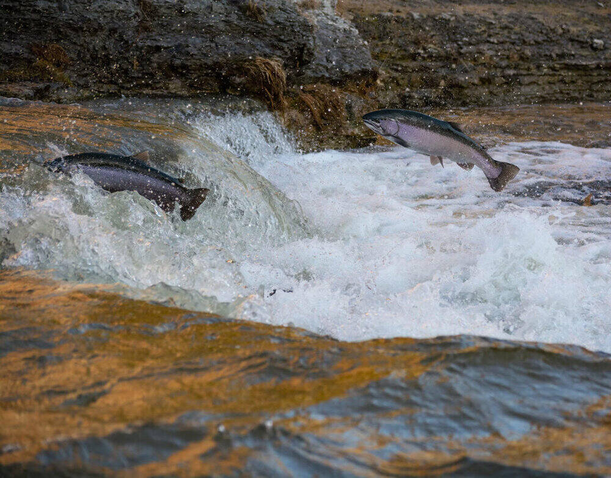
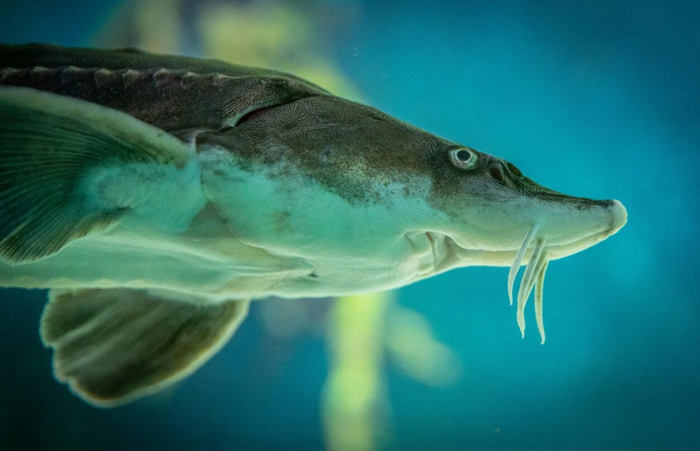
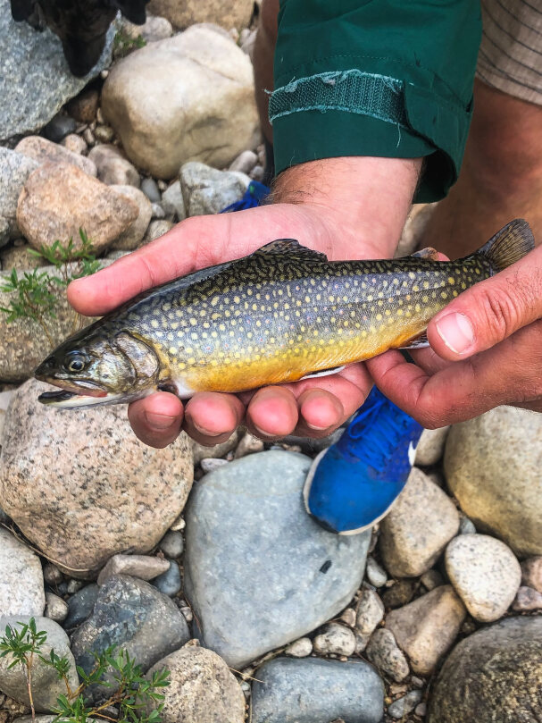
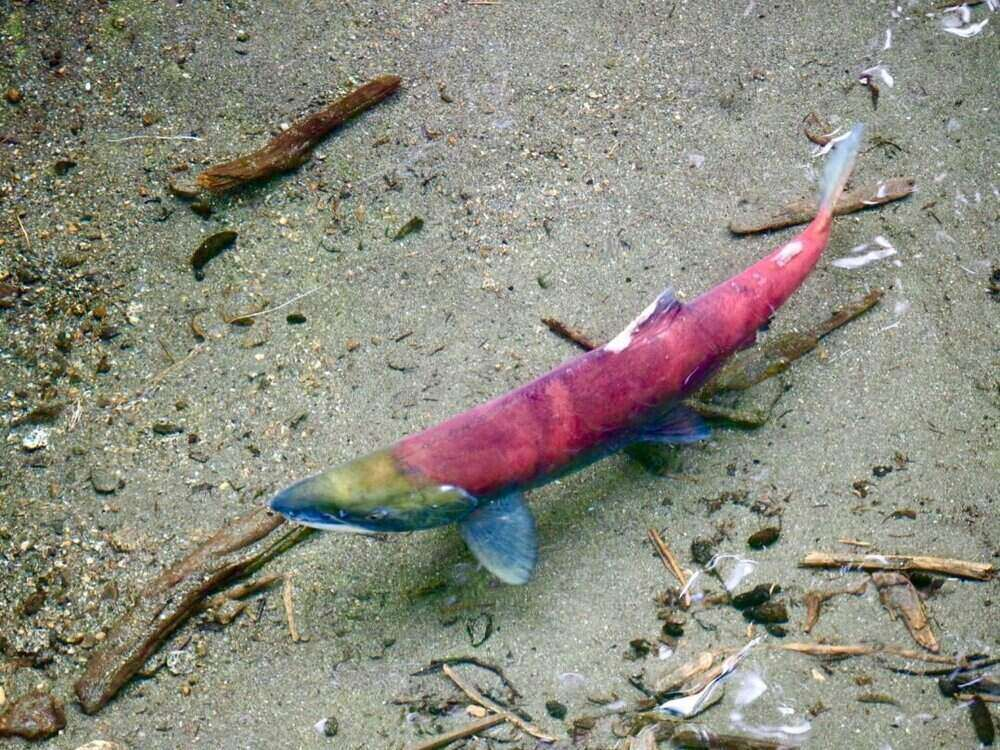

Fish of Idaho
Featured Fish
  Fish in Idaho
Idaho has a high variety of fish species. Anglers from around the world visit Idaho to enjoy its rich recreational fishing opportunities. Idaho boasts numerous freshwater rivers, lakes, and streams, which support important populations of both native species, including bull trout and steelhead, and introduced game fish, such as rainbow trout. Idaho is also known for its serious efforts in conservation, aimed at protecting endangered species, such as cutthroat trout and sockeye salmon.